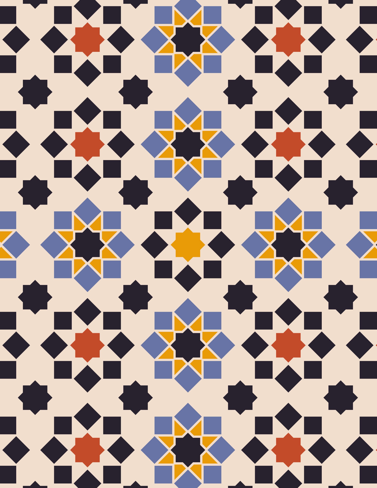
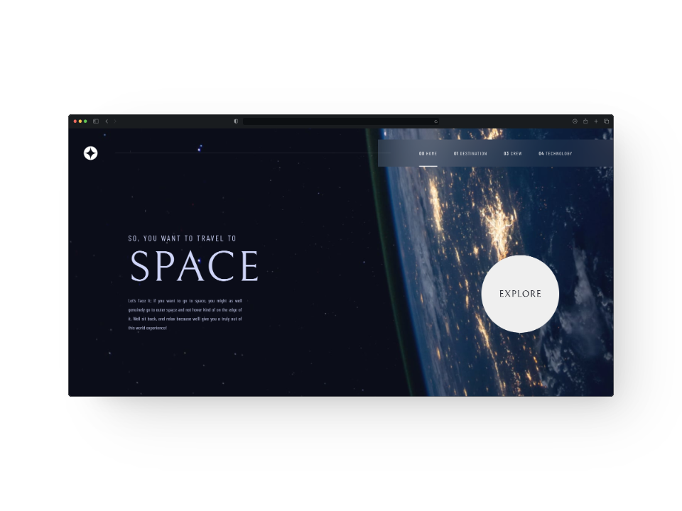
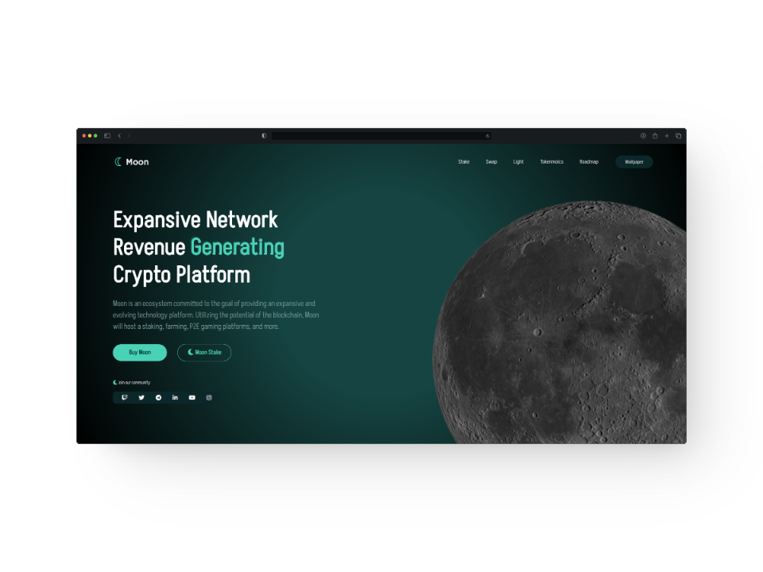
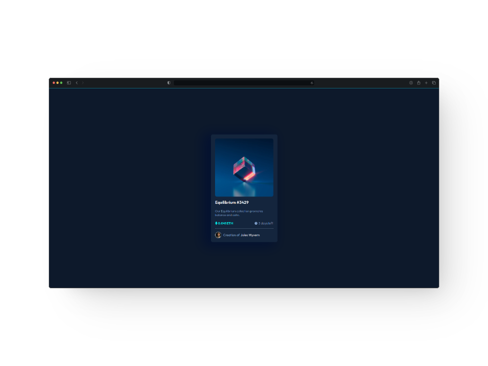
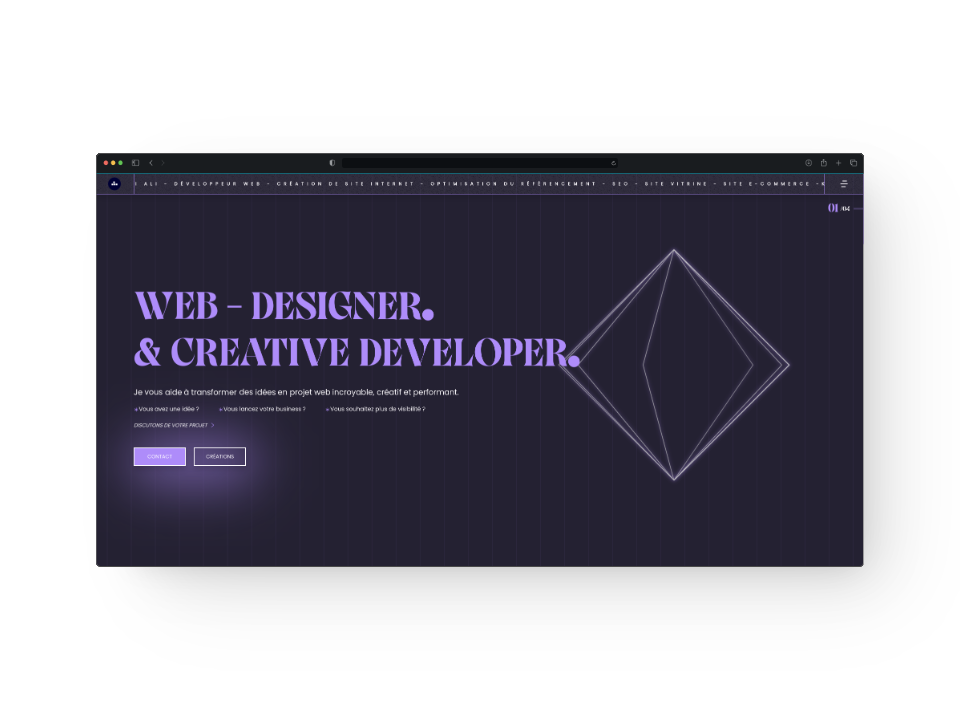

passionate web development. specialized in creating responsive, user-friendly web app. my expertise extends to modern frameworks. looking forward to collaborating on innovative projects!
web developer
frontend & creative

khadidja a.
french & moroccan


intuitive web experiences with efficient is our focus  Each project is a challenge to innovate ensuring code is both efficient and future-ready!
- react.js/next.js
- vue.js/nuxt.js
- javaScript
- node.js
- html
- css
- sass
- tailwind css
- git
- gsap
- cms
- webflow
- wordpress
- responsive design
- mobile first
- figma
- test/debugging
- accessibility
- seo
some projects
Explore my github for projects showcasing my skills in building efficient and creative solutions. Discover a range of projects highlighting my approach to clean, effective development.
-
00 space tourismview on github ↗
-
01 numériqu'ellesview on github ↗
-
02 levynaview on github ↗

-
03 moon cryptoview on github ↗
-
04 nft equilibriumview on github ↗
-
05 portfolioview on github ↗
about me
I'm khadidja A. i'm a frontend & creative developer based in France I love making the web a bit more beautiful!

Looking for a top-notch web developer?
contact me to discuss your project needs
and bring your vision to life.
Let's create something amazing!